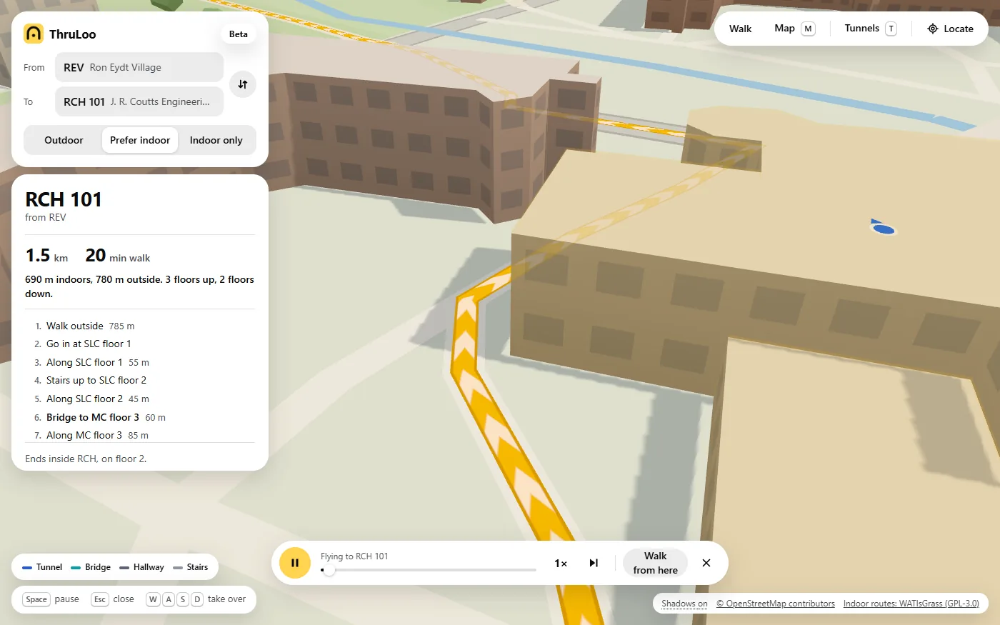
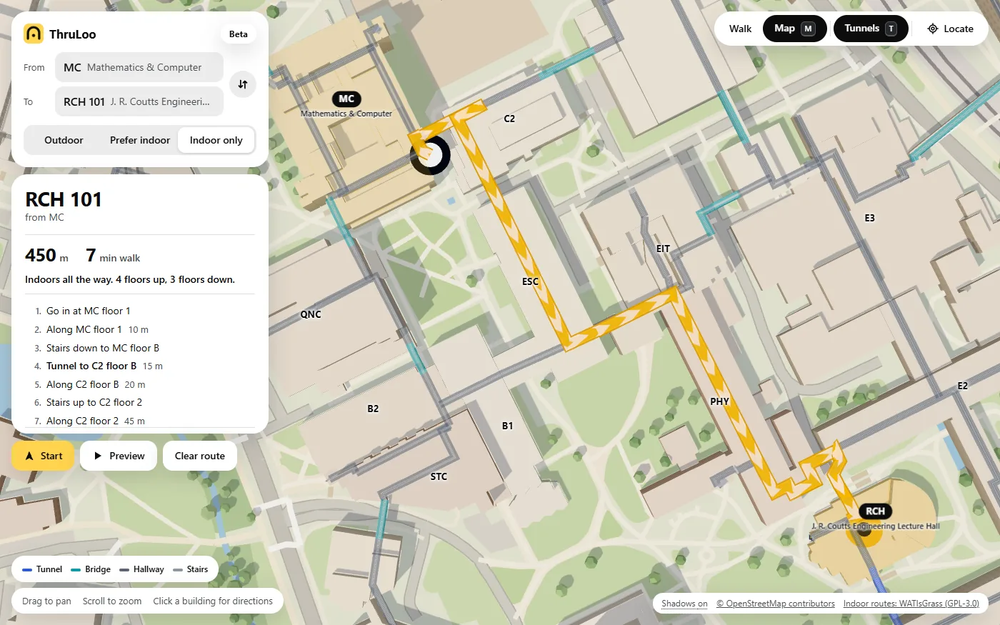

A 3D model of the University of Waterloo campus that runs in the browser. Search any building or room, get the fastest walking route outdoors or through the tunnels, and watch a camera fly it so you know exactly how to get there.
role
Solo project: data pipeline, routing and 3D scene
when
November 2026
built with
TypeScript, Vite, 3D in the browser, OpenStreetMap data, A* routing
result
Live at thruloo.dylanrolfe.ca. Over 1,000 people have used it, with tens of students on it every day.

A camera flythrough of a route from REV to RCH 101, with the step-by-step directions on the left.
what it does
Finds the fastest walking route between any two buildings or rooms, with distance, time and step-by-step directions down to which floor and which tunnel.
Offers three route types: outdoor, prefer indoor, or indoor only through the tunnels and bridges.
Lets you walk the campus in third person: in through a door, along the hallways, down the stairs and through the tunnels, with the buildings cut away around you.
Flies a camera along the route, and can follow your live location as you walk it.
Has its own phone layout, and any route can be shared as a link.
how it works
A data pipeline pulls the campus from OpenStreetMap, cleans and classifies it, and bakes it into a route graph in local metres, with doors.
Routing is an A* search with a cost profile for each route type, written as plain TypeScript with unit tests.
The indoor and tunnel network comes from the open-source WATIsGrass project by Ricky Qin and Manasva Katyal (GPL-3.0); ThruLoo generates its indoor route graph from that data.
Tests cover routing, graph building, the indoor import and real campus routes.
where it stands
In beta and in daily use. ThruLoo is an independent student project and is not affiliated with the University of Waterloo.

Map view with the tunnel network on: an indoor-only route from MC to RCH 101.